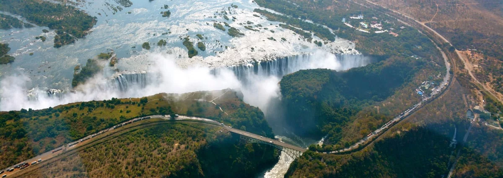
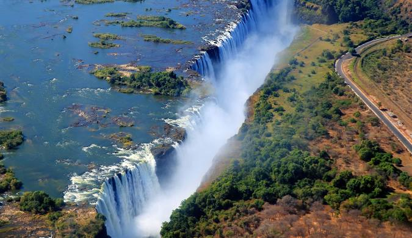

les chutes victoria
Elles sont des chutes d'eau situées sur le fleuve Zambèze, qui constitue à cet endroit la frontière entre la Zambie, à proximité de la ville de Livingstone, et le Zimbabwe. Le fleuve se jette dans la cataracte sur environ 1 700 mètres de largeur et d'une hauteur qui peut atteindre un maximum de 108 mètres. Elles donnent un spectacle remarquable par leur disposition particulière : elles se jettent dans une longue faille du plateau, pour s'échapper par un étroit canyon. Elles ne peuvent ainsi être vues de face qu'à une distance d'une centaine de mètres seulement. En prenant en compte leur largeur, leur hauteur et leur débit, elles font partie des cataractes les plus importantes du monde
Decouverte
Les chutes Victoria figurent parmi les cascades les plus spectaculaires au monde. A cheval entre la Zambie et le Zimbabwe, elles furent "découvertes" en novembre 1855 par l'explorateur écossais David Livingstone qui choisit de les baptiser en l'honneur de la reine Victoria au Royaume-Uni
C'est au XIXe siècle que l'existence de cette cascade hors normes a été portée à l'attention du monde. Elle était pourtant loin d'être inconnue. L'immense rideau d'eau constituait même depuis des siècles, voire millénaires, un site d'importance pour les peuples autochtones.
Certains la nomment Shungu na mutitima, d'autres Mosi-o-Tunya. Autant de noms évoquant "la fumée qui gronde" en référence au bruit de la cascade et ses éclaboussures d'eau. Une carte datée de 1715 réalisée par le géographe Nicolas de Fer marquait également déjà le phénomène naturel à son emplacement exact. Il a cependant fallu attendre plus d'un siècle pour que les Européens ne découvrent réellement l'existence de cette merveille naturelle grâce à l'explorateur David Livingstone. En 1849, ce missionnaire écossais entama une exploration du centre-sud du continent africain avant de se diriger en 1851 vers le fleuve Zambèze.
Il remonta le cours d'eau en direction de son embouchure, sur la côte du Mozambique, accompagné de plusieurs dizaines d'hommes du peuple Makololo. Selon les sources historiques, Livingstone et son équipe atteignirent les chutes le 17 novembre 1855 mais aperçurent ses projections de gouttelettes plusieurs kilomètres avant. Les hommes de l'explorateur naviguèrent en canoë jusqu'à l'une des petites îles situées sur le fleuve vers l'extrémité de la cascade, une île depuis baptisée Livingstone Island. S'approchant suffisamment, l'Ecossais put jeter un œil en contrebas, observant les eaux se déverser avec violence et former au passage un arc-en-ciel. Son voyage lui avait déjà permis de découvrir les chutes Ngonye situées à quelque 300 kilomètres de là, dans l'ouest de la Zambie et dont la hauteur maximale atteint une vingtaine de mètres. Mais le spectacle de cette cascade Mosi-o-Tunya, depuis cette île et son point de vue vertigineux, fut pour lui sans pareil. "Rampant avec crainte jusqu'au bord, je regardai en bas vers une large faille s'étendant de rive en rive sur le large Zambèze, et vis qu'un courant d'un millier de mètres de large se jetait en contrebas sur une trentaine de mètres et se comprimait soudainement en une zone de quinze à vingt mètres... le spectacle le plus merveilleux auquel j'ai assisté en Afrique", écrivit l'explorateur.
Livingstone devint officiellement le premier Européen à observer les chutes. Il fit part de sa "découverte" jusqu'au Royaume-Uni, rebaptisant au passage la cascade en l'honneur de la reine Victoria. C'est ainsi que Mosi-o-Tunya devinrent les chutes Victoria (en anglais "Victoria Falls"). Une statue en son honneur trône aujourd'hui côté zimbabwéen et une ville a été rebaptisée en son nom côté zambien.
Description
La géographie des chutes est exceptionnelle. La formation géologique, composée principalement de basalte, a été taillée par l’érosion et une série d’effondrements successfis au fil des millénaires, créant un méandre de gorges. Les fameuses chutes d’eau en elles-mêmes sont le point culminant de ce paysage impressionnant. Outre leur taille impressionnante, les Chutes Victoria se distinguent également par leur « brouillard de pluie ». En raison du débit intense du fleuve Zambèze, de vastes nuages d’embruns se forment au-dessus des chutes, créant une atmosphère de brume constante qui ajoute au caractère magique et mystérieux de cet endroit. Du fait de l’implation de la frontière au milieu des chutes Victoria, il est possible de visiter ces dernières de chaque côté de la frotière : en Zambie, et au Zimbabwe. L’expérience s’avère souvent complémentaire, surtout en focntion de la saisonnalité : en s’assèchant, les chutes Victoria deviennent moins impressionnante et la topographie du site fait que la partie Zambienne s’assèche la première. La catarcate principale, qui reste toujours en eau, est au Zimbabwe. Il peut donc être intéressant en focntion de la période de votre visite, de passer d’un côté et de l’autre.
les activités à faire
Les chutes Victoria offrent une multitude d'activités passionnantes pour les visiteurs. Voici quelques-unes des activités à faire aux chutes Victoria :
•Observation des chutes : L'activité principale est bien sûr d'admirer la majesté des chutes Victoria elles-mêmes. Vous pouvez explorer plusieurs points de vue le long des rives pour obtenir différents angles et perspectives sur les chutes et sentir la puissance de l'eau qui s'écoule.
•Croisière sur le fleuve Zambezi : Profitez d'une croisière relaxante sur le fleuve Zambezi pour observer la faune et la flore de la région. Vous pourrez peut-être apercevoir des crocodiles, des hippopotames et une variété d'oiseaux.
•Safari : Les réserves naturelles environnantes, telles que le parc national de Mosi-oa-Tunya en Zambie, offrent des safaris passionnants pour voir des animaux sauvages tels que les éléphants, les lions, les girafes et plus encore.
•Activités nautiques : Pour les amateurs d'aventure, il est possible de faire du rafting en eaux vives sur le fleuve Zambezi, offrant une expérience palpitante au milieu des rapides et des paysages spectaculaires.
•Tour en hélicoptère ou en avion : Pour une vue panoramique à couper le souffle sur les chutes Victoria et la région environnante, vous pouvez réserver un tour en hélicoptère ou en avion.
•Pont des chutes Victoria (Victoria Falls Bridge) : Les courageux peuvent tenter le saut à l'élastique depuis le pont des chutes Victoria pour une expérience pleine d'adrénaline et une vue unique sur les chutes.
•Visite des villages locaux : Pour une immersion culturelle, participez à des visites guidées dans les villages locaux pour en apprendre davantage sur la culture, les traditions et la vie quotidienne des habitants de la région.
•Shopping et artisanat : Ne manquez pas l'occasion de découvrir l'artisanat local et les produits artisanaux, comme les sculptures sur bois, les peintures, les tissus colorés et les bijoux uniques, qui sont souvent disponibles sur les marchés locaux.
Ces activités offrent aux visiteurs une expérience complète et variée autour des chutes Victoria, combinant aventure, découverte de la nature, culture et détente dans un cadre naturel exceptionnel.
.jpg)
.jpg)
.jpg)
.jpg)